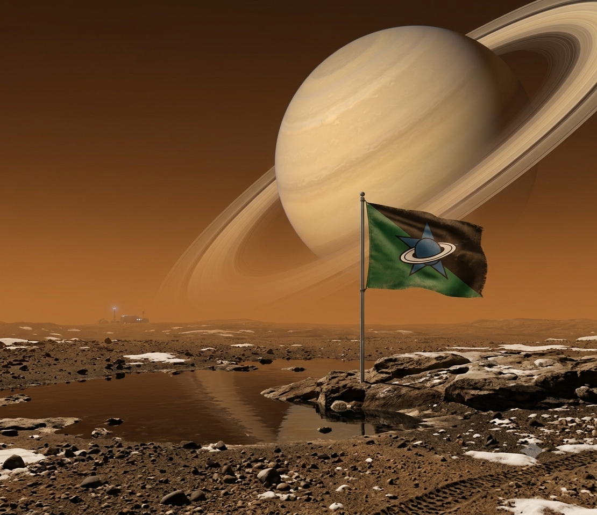
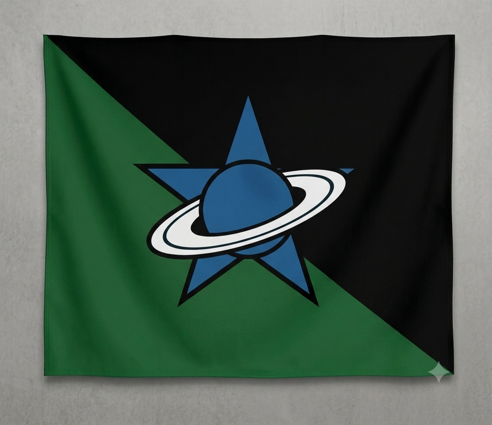

Devlet Künyesi

Thalora Resmi Devlet Bayrağı ve Sembolü
Ülke Adı
THALORA
Başkent
JAXORA
Resmi Dil
Lorash
Para Birimi
Thalor (Ⱦ)
Konum
Titan (Satürn uydusu)
Sembol
Satürn
Thalora Resmi Devlet Bayrağı ve Sembolü
THALORA
JAXORA
Lorash
Thalor (Ⱦ)
Titan (Satürn uydusu)
Satürn
Titan'ın metan gölleri kıyısında kurulan Jaxora, Thalora'nın yönetim, bilim ve kültür merkezidir. Devasa yaşam kubbeleri ve gelişmiş atmosfer düzenleme sistemleriyle Titan'ın zorlu koşullarında gelişmiş bir şehir yaşamı sunar.
Titan'ın gökyüzünde görkemli bir şekilde uzanan Satürn ve halkaları, Thalora'nın mimarisinden sanatına kadar pek çok alana ilham verir. Şehirlerin planlamasında Satürn'ün görünürlüğü ve gözlem açıları dikkate alınır; gökyüzü, Thalora yaşamının ayrılmaz bir parçasıdır.
Titan'ın zengin hidrokarbon kaynakları, Thalora'nın enerji üretiminde önemli bir yere sahiptir. Metan gölleri ve yeraltı kaynaklarından elde edilen yakıtlar, gelişmiş enerji teknolojileriyle işlenerek şehirlerin ve sanayinin ihtiyaçlarını karşılar. Bu güçlü kaynak altyapısı, Thalora ekonomisinin temel dayanaklarından birini oluşturur.
Thalora'nın resmî dili olan Lorash, kendine özgü ses yapısı ve dilbilgisiyle şekillenmiş özgün bir dildir. Akıcı kelime yapısı ve uzay, astronomi ve günlük yaşama ait özel terimleriyle Thalora kültürünün önemli bir parçasıdır.
Yeşil bölge yeryüzünü, siyah bölge ise gökyüzünü temsil eder. Anlamı, yeryüzü ile gökyüzünün birleşmesidir.

